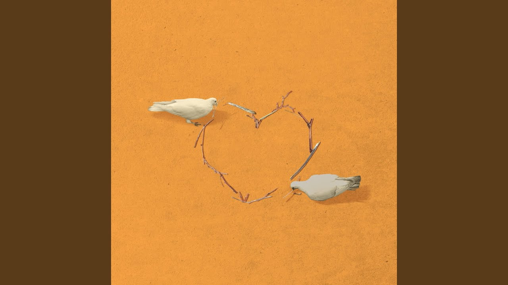

Ni tu akkhan naal kardi ishaare
Sajje hath naal zulfan sanwaare
Kehdi gallon fikran aan kardi?
Dekh matthe 'te tiudiyan kyon paave?
Billo, ni main sidhi rakkhi Rabb naal jod, kude
Dukh tere saare hi chuka daan
Hai rakkhi Rabb naal jod, kude
Dukh tere saare hi chuka daan
Ikk vaari je tu haan kare
Jind tere naam vi kara daan
Keraan bol ke taan dass, kude
Kalli-kalli reejh main puga daan
(Jind tere naam vi kara daan)
(Kalli-kalli reejh main puga daan)
Ho, nakhre tere ne kinne patt'te
Fukre, ki vaili, saare chakkte
Jaan ke gali de vichon langhdi
Te utton nakk chaadhdi ae rakkh lakk 'te hath ni
Eh katal kara dau teri akkh, kude
Jaan kaddhi jaandiyan adawan
Katal kara dau akkh, kude
Jaan kaddhi jaandiyan adawan
Ikk vaari je tu haan kare